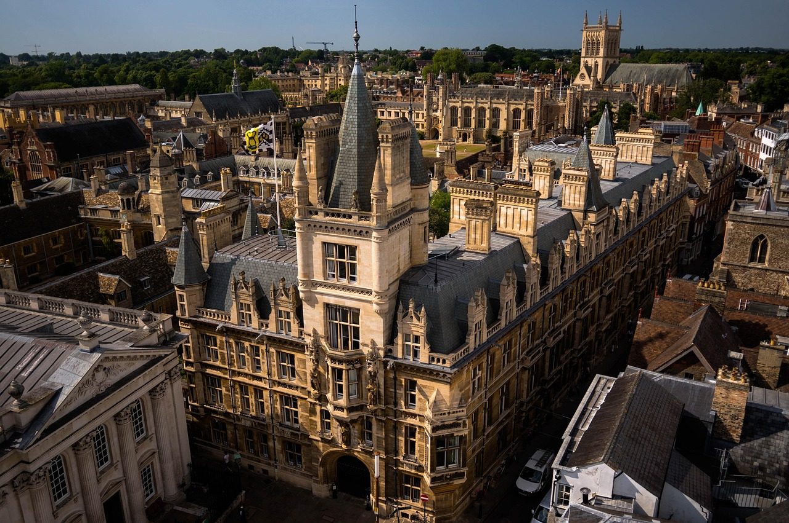

Mengenal Perjalanan dan Perkembangan Smks Hogwarts
SMKS Hogwarts didirikan pada tahun 2003 dengan semangat untuk memberikan pendidikan vokasi berkualitas yang mampu menjawab tantangan zaman. Nama "Hogwarts" terinspirasi dari semangat belajar yang penuh imajinasi, kerja keras, dan keberanian dalam menghadapi masa depan.Pada awal berdirinya, SMKS Hogwarts hanya memiliki dua jurusan, yaitu Teknik Komputer dan Jaringan (TKJ) dan Akuntansi. Dengan jumlah siswa yang masih terbatas, sekolah ini mulai menapaki jalannya sebagai institusi pendidikan yang fokus pada keahlian, kedisiplinan, dan karakter.
Seiring berjalannya waktu, SMKS Hogwarts terus mengikuti perkembangan kurikulum nasional. Beberapa fase penting dalam pengembangan kurikulum meliputi:
1. Kurikulum 2006 (KTSP): Mulai diterapkan di tahun 2008, memberi keleluasaan sekolah dalam menyusun silabus berbasis potensi lokal dan kebutuhan dunia kerja.
2. Kurikulum 2013: Menekankan pada kompetensi sikap, pengetahuan, dan keterampilan secara seimbang. SMKS Hogwarts mulai fokus mengembangkan pembelajaran berbasis proyek (project-based learning) dan pembelajaran kolaboratif.
3. Merdeka Belajar (Kurikulum Merdeka): Mulai diadaptasi pada tahun 2022, memberikan siswa lebih banyak ruang untuk mengeksplorasi minat dan bakat mereka. Sekolah menyediakan program teaching factory, kelas kewirausahaan, dan magang industri sebagai bagian dari pembelajaran kontekstual.
Saat ini, SMK telah mengintegrasikan teknologi informasi dalam proses belajar mengajar. Banyak SMK juga bekerja sama dengan industri dan startup untuk memberikan pengalaman nyata bagi siswa sebelum lulus.
SMK tidak hanya menjadi tempat pendidikan formal, tetapi juga berperan penting dalam pengembangan sumber daya manusia di daerah. Lulusan SMK kerap menjadi pelopor usaha mikro, tenaga kerja andal, serta agen perubahan di lingkungan sekitarnya.
Berikut adalah tampilan gedung sekolah kami:
